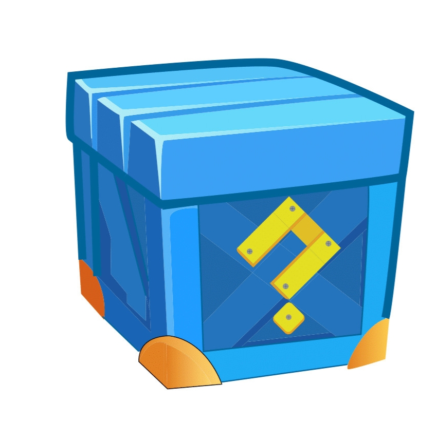
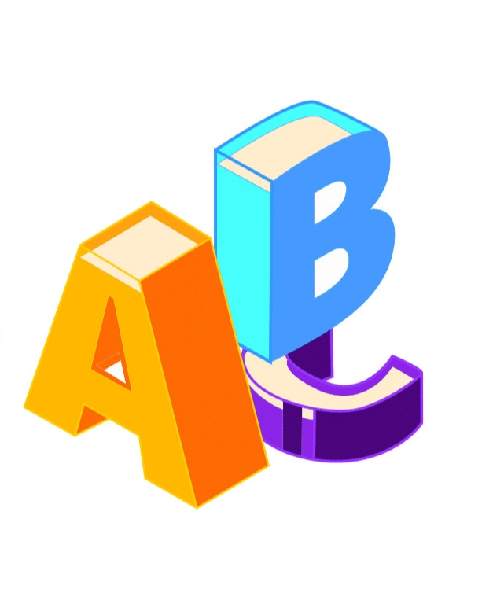
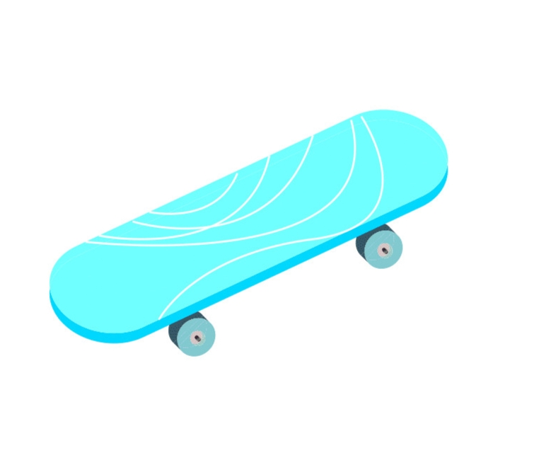
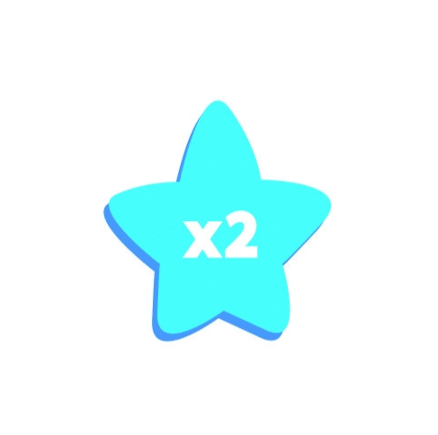
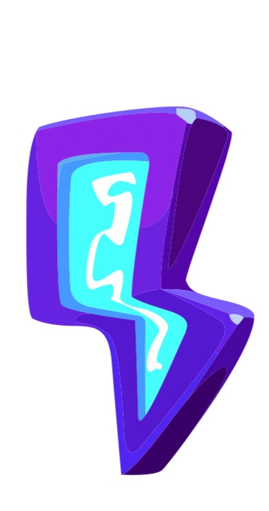

Vàng: dùng để mở thông điệp bí ẩn nếu người chơi không thu thập được hộp bí ẩn. Mỗi lần thu thập được 1 vàng, điểm sẽ tăng thêm 100.
Nhận dạng
Tính cách
Hoàn cảnh:
Vai trò trong trò chơi:
Vàng: dùng để mở thông điệp bí ẩn nếu người chơi không thu thập được hộp bí ẩn. Mỗi lần thu thập được 1 vàng, điểm sẽ tăng thêm 100.
Hộp bí ẩn: có thể chứa tiền, thông điệp bí ẩn, x2 vàng, ván trượt hoặc các item tăng điểm. Được mở ra khi kết thúc màn chơi hoặc người chơi không hoàn thành màn chơi. Thu thập sẽ được thêm 500 điểm.
Các chữ cái: trên đường đi George sẽ gặp phải những chữ cái ở dọc đường, hãy cố gắng thu thập chúng để tìm ra thông điệp của màn chơi. Nếu không thu thập đủ bạn có thể tìm thấy chúng ở hộp bí ẩn hoặc dùng vàng để mở. Thu thập sẽ được 200 điểm 1 chữ, nếu hoàn thành thông điệp sẽ được bonus 500 điểm.
Ván trượt: trong thời gian hiệu lực nếu người chơi đâm hoặc va vào chướng ngại vật, người chơi vẫn có thể tiếp tục nhưng sẽ mất đi ván trượt. Người chơi 4 có thể sử dụng ván trượt trong suốt hành trình, chỉ cần trong kho đồ của họ có ván trượt. Có thể mua bằng tiền trong cửa hàng hoặc tìm thấy trong hộp bí ẩn. Nếu muốn sử dụng, người chơi nhấn vào phím cách (space bar) trên bàn phím
Nam châm: hút tất cả vàng ở khu vực quanh đó trong khoảng thời gian hiệu lực.
Nhân đôi điểm: người chơi được nhân đôi điểm trong suốt thời gian hiệu lực.
Năng lượng: giúp George chạy nhanh hơn và giảm dần theo thời gian
